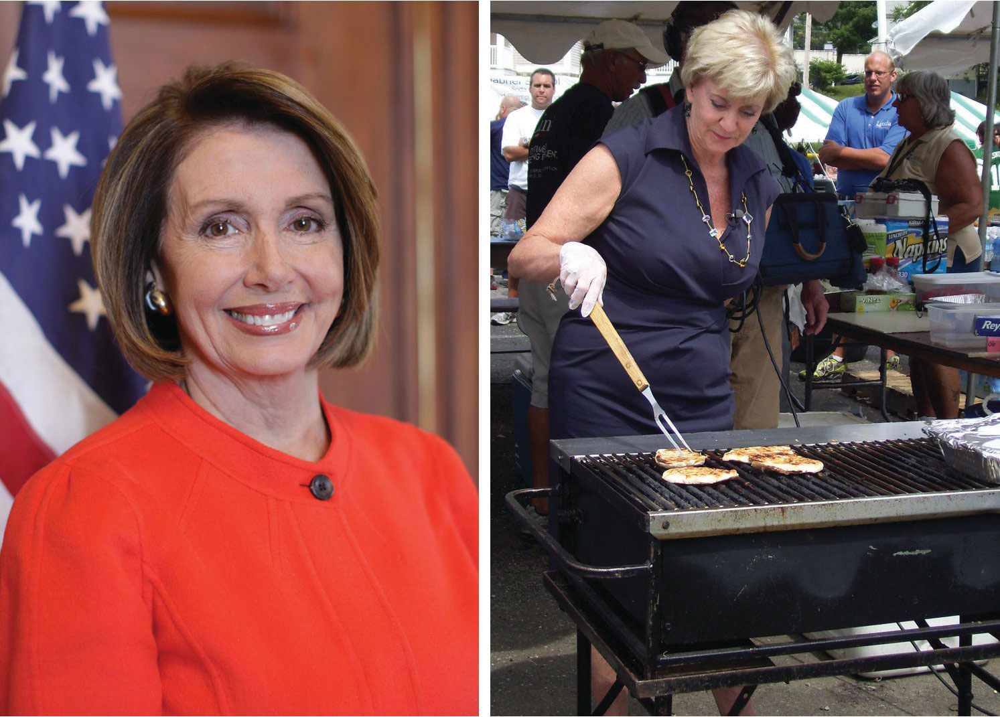
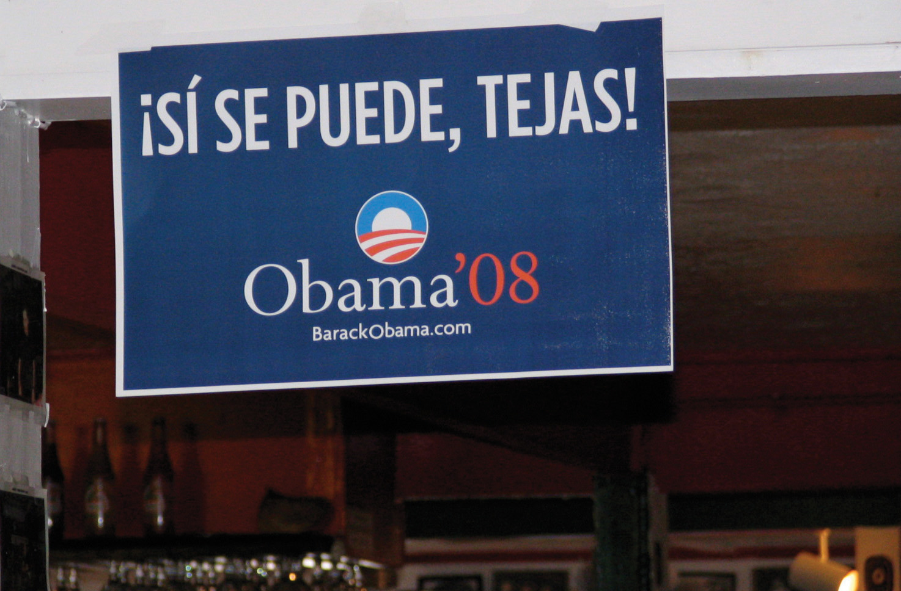

After reading this section, you should be able to answer the following questions:
Meaningful and regular opportunities for all people to participate must be guaranteed by a democratic political system, whether or not everyone chooses to take part. But not all Americans take part in politics, nor are the opportunities for participation equal. Voters and political activists generally are older, more educated, and better off financially than the general population. These people have the best chance of having their views represented in government. Meanwhile, those who rely the most on government programs and policies, such as recipients of public assistance, often have fewer opportunities to participate and are less engaged.
Socioeconomic statusPeople’s levels of education, income, and occupation, which are strongly linked to patterns of political participation. (SES) is determined by people’s levels of education, income, and occupation. Wealthier and better educated people tend to vote more often, participate more in political activities, and donate more money to causes than poorer or less educated people. They also have greater access to the resources that facilitate political activity, including contacts with people in powerful positions. People’s occupations also are related to their participation, as people in managerial and professional positions are the most politically active, followed by craftspersons, service workers, and laborers. Many managers and professionals follow politics as part of their jobs. The unemployed are the least inclined to take part.
Education has the strongest impact on participation, as it provides people with background knowledge of how the political system works. Educated people develop the skills that allow them to follow and understand events through the mass media. They are likely to form opinions about political issues and engage in discussions. The political blogs with the most readers, such as Daily Kos and Huffington Post, are written and read by well-educated people.Matthew Hindman, The Myth of Digital Democracy (Princeton, NJ: Princeton University Press, 2008). Education prepares people to deal with the bureaucratic aspects of participation, such as registering to vote or organizing a petition drive. Eighty-three percent of people with graduate school education voted in the 2008 presidential election compared with 39 percent of those without a high school diploma.Michael McDonald, “Current Population Survey Voting and Registration Supplement,” United States Election Project, http://elections.gmu.edu/CPS_2008.html. The 2010 midterm elections were decided primarily by people with at least some college experience. Less than 5 percent of voters had no high school education, 16 percent were high school graduates, 29 percent had some college, and 50 percent were college graduates.Ezra Klein, “Who Graduates, Who Votes and Who’s Unemployed—in the 2010 Midterm Elections,” washingtonpost.com, http://voices.washingtonpost.com/ezra-klein/2010/12/who_graduates_who_votes_and_wh.html.
Political participation differs notably by age. People between the ages of thirty-five and sixty-five are the most politically active. At this stage in life, people are more likely than younger people to have established homes, hold steady jobs, and be settled into communities. Those with stable community roots often have strong incentives and greater resources for becoming involved in politics.
While younger people turn out in elections less often than older people, youth voting has been on the rise in presidential elections since 2004. Turnout among eighteen- to twenty-four-year-olds dropped from 50 percent in 1972, the first presidential election year after the voting age was lowered to eighteen, to 36 percent in 2000. Turnout among senior citizens, people sixty-five and older, increased to nearly 70 percent in that same time period.Project Vote-Smart, Democracy Inclusion Project, http://www.vote-smart.org/yip. Young voter turnout rose to 47 percent in 2004 and 51 percent in 2008, partly as a result of voter registration and mobilization efforts by groups like Rock the Vote. The youth vote contributed to the success of Democratic presidential candidate Barack Obama in 2008, as young volunteers provided countless hours of campaign support.Center for Information & Research on Civic Learning and Engagement (CIRCLE), “Youth Voting,” http://www.civicyouth.org/?page_id=241#1. Information about young voters can be obtained from the Center for Information & Research on Civic Learning and Engagement.
Figure 8.9

Young people have brought issues to the attention of public officials and worked effectively for positive change.
Source: Photo courtesy of the US Department of State, http://www.flickr.com/photos/statephotos/5085000843/.
People under the age of thirty are among the least involved in mainstream forms of participation. Young people often lack the money and time to participate. Still, many young people realize that participation matters. Reacting to problems they see in their hometowns, youth have formed groups to work for change. They have successfully lobbied government officials, spoken out at public meetings, and provided formal testimony at hearings. Young people have established safety policies in schools, protested against increases in college tuition rates, and prompted the creation of recreational facilities for biking, skateboarding, and ice hockey.
Political scientists and journalists often talk about the gender gapThe difference that exists between men’s and women’s political participation. in participation, which assumes women lag behind men in their rates of political engagement. The gender gap is closing for some forms of participation, such as voting, but still exists for activities such as running for office.
Women turn out to vote more frequently than men. Since 1986, women have exceeded men’s turnout rate in presidential elections. Sixty-six percent of women cast a ballot in 2008 compared with 62 percent of men. Women have a strong sense of civic duty and believe that voting is a citizen’s obligation. The prominence in campaigns of issues of importance to women, such as abortion, education, and child welfare, also encourages women to vote.Richard Seltzer, Jody Newman, Melissa Vorhees Leighton, Sex as a Political Variable (Boulder, CO: Lynne Reinner, 1997).
Since the 1990s, women have been as likely as men to contact members of congress, sign and circulate petitions, attend local political meetings, and donate their time to political causes. They take part in local and state political activities more than in the national realm, where most media attention is focused. However, women are somewhat less inclined than men to use new media, such as online news sites and blogs, for politics.
A significant gender gap in participation exists for running for and holding political office. While women make up more than half the population, they constitute far less than half of the elected officeholders, especially at the national level. A total of 274 women have served in Congress since 1917, when Jeannette Rankin (R-MT) was the first woman elected to Congress. A record number of women—over 270—ran in the congressional primaries in 2010, although many were not successful in their bids. There are 75 female House members in the 112th Congress, constituting 17 percent of the 435-member body, which is a historical high. Eighteen of the one hundred senators are women.Office of the Clerk, US Capitol, Women in Congress website, http://womenincongress.house.gov.
Women in Congress
The Women in Congress website of the Office of the Clerk of the US Capitol provides historical information and data on women members of Congress.
Figure 8.10
An increasing number of women are running for national office.
Source: Photo courtesy of the Office of the Speaker, http://commons.wikimedia.org/wiki/File:Speaker_Nancy_Pelosi.jpg and http://commons.wikimedia.org/wiki/File:Linda_McMahon_Grilling_--_Sgt._R.K._Blue.jpg.
There is little evidence today that female candidates have a harder time attracting fair news coverage, raising money, or getting votes than male candidates running as challengers or for open seats. In the 2010 midterm elections, some of the best-funded candidates were women. However, women candidates often face male incumbents, candidates already in office, who are difficult to defeat.R. Darcy, Susan Welch, and Janet Clark, Women, Elections, and Representation (Lincoln: University of Nebraska Press, 1994). Motherhood becomes an issue for women who seek or hold public office. The 2008 Republican vice presidential candidate, Sarah Palin, faced scrutiny by the press and voters because she was the mother of five children, including a four-month-old baby with Down syndrome.
Participation differs among members of racial and ethnic groups. Specific patterns of participation are associated with blacks, Latinos, and Asian Americans and Pacific Islanders.
Discriminatory practices kept black voter turnout low until after the passage of the Voting Rights Act of 1965. Poll taxesFees that had to be paid before a citizen could register to vote; this requirement disenfranchised the poor, including black citizens., fees that had to be paid before a citizen could register to vote, disenfranchised the poor, many of whom were black. Literacy testsTests requiring people to demonstrate their ability to read, write, and interpret documents before being allowed to register to vote and that were used to deny blacks voting rights., which required people to demonstrate their ability to read, write, and interpret documents prior to voting, were applied unfairly to blacks. The “white primaryDemocratic Party primary elections in certain Southern states that permitted only whites to vote.” restricted voting in Democratic primaries to whites in certain Southern states. The Southern Democratic party was so dominant that winning the primary was tantamount to election to office. Intimidation and violence by groups such as the Ku Klux Klan kept black voters from the polls. Eventually, civil rights protests and litigation resulted in the elimination of formal barriers to voting. Today, black citizens vote at least as often as white citizens who share the same socioeconomic status. Sixty-five percent of black voters turned out in the 2008 presidential election compared with 66 percent of white voters. Over 90 percent of black voters supported African American candidate Barack Obama.Michael McDonald, “Current Population Survey Voting and Registration Supplement,” United States Election Project, http://elections.gmu.edu/CPS_2008.html.
Black and white Americans are about equal in how much time and effort they devote to activities other than voting. However, they differ in the types of activities in which they engage. Whites are more likely to contact public officials and join political organizations. Black citizens are active in election campaigns and social movements.
The Latino population in the United States is well established and has grown to over 47 million people from diverse countries of origin. Although they form a substantial political bloc, only 49 percent of eligible Latino voters turned out in the 2008 presidential election. Latinos tend to participate in other forms of political activity with less frequency than either white or black citizens. In 2010, however, three Latino candidates were elected to top offices, including two governors and one senator, for the first time in history. The Pew Hispanic Center provides information and data on Latino American politics.
Figure 8.11
Candidates routinely aim campaign ads at the fast-growing Latino and Asian American populations.
Source: Photo courtesy of (Brian), http://commons.wikimedia.org/wiki/File:Si_se_puede,_Tejas_Obama.jpg.
Language is one barrier to Latino participation. Candidates recognize that Latinos constitute a large and growing voting bloc and have begun campaigning in Spanish. During the 2000 presidential election campaign, candidate George W. Bush ran nearly as many ads in Spanish as in English.Rush Schriefer, Bush campaign media consultant, interview by Owen, May 22, 2001. The 2008 presidential candidates’ websites featured extensive Spanish-language content, as did the websites of a good number of congressional candidates in 2010.
According to the US Census, Asian Americans and Pacific Islanders are the fastest growing and most diverse ethnic group. Yet their rates of participation are lower than for other groups. In 2008, 48 percent of Asian Americans turned out to vote.Douglas R. Hess, “Analysis of the 2008 Current Population Survey (CPS) Voter and Registration Supplement,” http://www.projectvote.org/images/publications/Reports%20on%20the%20Electorate/Analysis%20of%20the%202008%20CPS%20Voting%20Supplement.pdf. Cultural factors contribute to the lower levels of Asian American and Pacific Islander voting. Some are recent immigrants who still maintain strong ties to their ethnic culture. Asian Americans who have been victims of hate crimes or consider themselves to be part of a deprived group find their way to the polls in greater numbers.The White House Commission on Asian Americans and Pacific Islanders, A People Looking Forward (Washington, DC: US Government, 2001).
Who participates in politics depends on a variety of factors, including socioeconomic status, age, gender, and race and ethnicity. Those with the most money, time, and skills are more likely to participate. Older people with higher education and income are the most likely to vote and take part in politics. People who have the least in society, and who are most in need of government assistance, are often the most poorly equipped to take action to improve their lot.